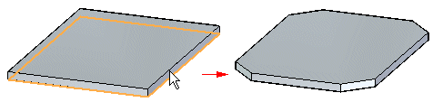

Break a corner on a sheet metal part
Break a corner on a sheet metal part in the ordered environment
-
Choose Home tab→Sheet Metal group→Corners list→Break Corner
 .
. -
Select the edge or edges you want to break.
-
Use the command bar boxes to define break characteristics.
-
Finish the feature.
Break a corner on a sheet metal part in the synchronous environment
-
Choose Home tab→Sheet Metal group→Break Corner
. -
Use the command bar options to specify either a radius corner or chamfer corner.
-
Select the edge or edges you want to break.
-
Type a value for the radius or chamfer.
-
Click to finish the feature.
Tip:
-
You can select the break option before or after selecting the edges you want to break.
-
You can set the selection type to Face to apply the break to all thickness edges of the selected face, including all interior and exterior thickness edges.
